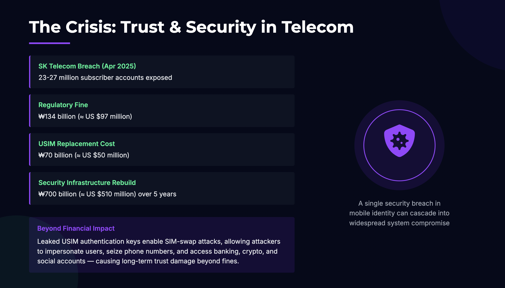
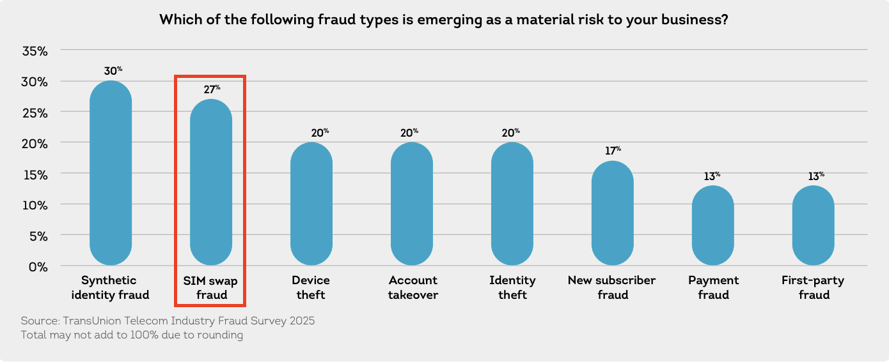
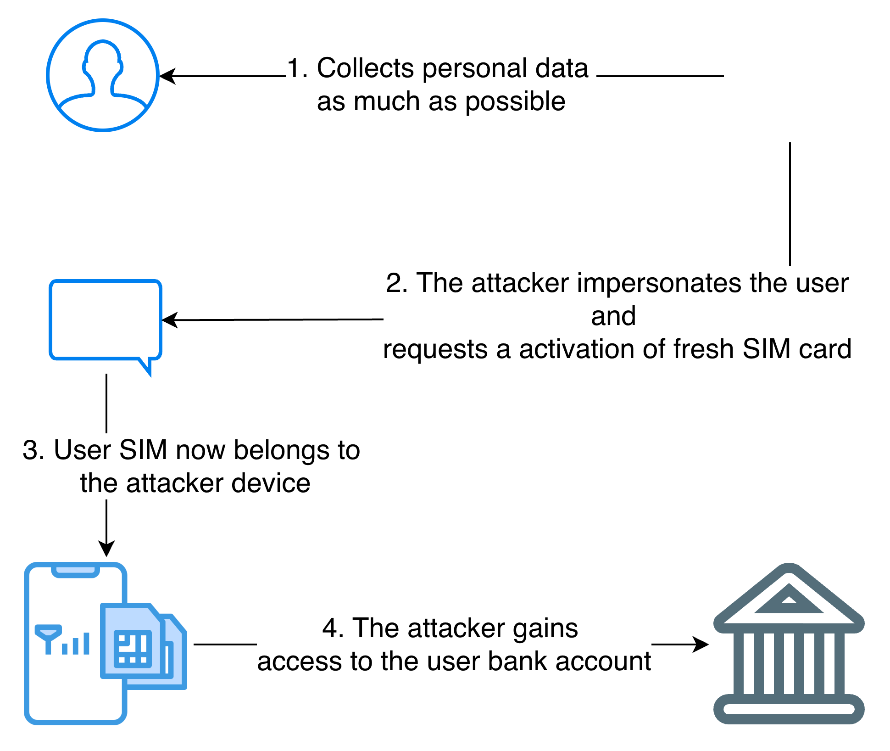
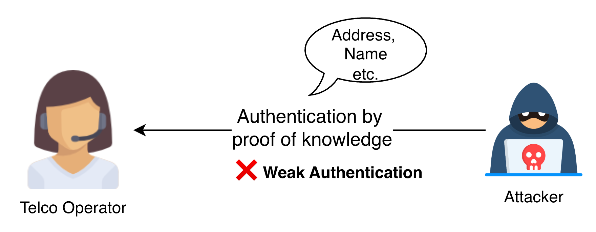
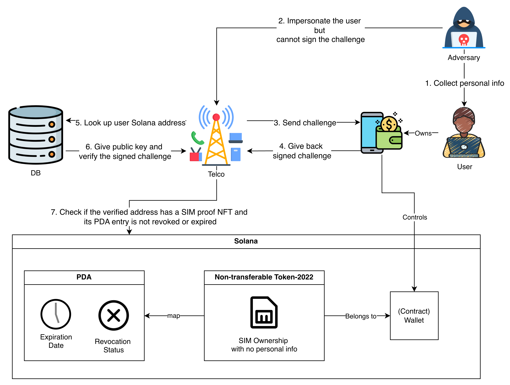
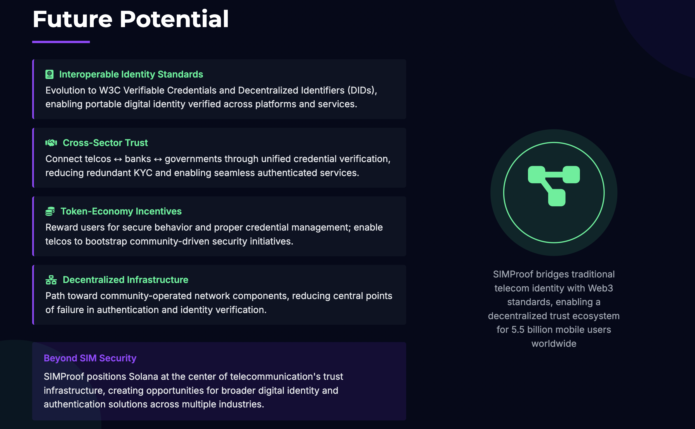

In an era marked by rapid digital transformation while the trust is becoming elusive due to upcoming technologies such as generative AI, trust and security have become foundational to the infrastructure that underpins our lives. In the telecommunications sector, a domain that blends public-utility scale with critical national infrastructure responsibilities, they are more evidently important.
Consider the case of SK Telecom. In April 2025, the company disclosed a major breach of its USIM-related data, affecting approximately 23 – 27 million subscriber accounts. (Korean TOPIK Resources) The fallout was enormous: SK Telecom faced regulatory fines of ₩134 billion (≈ US $97 million), incurred roughly ₩70 billion (≈ US $50 million) in USIM replacement costs, and pledged an additional ₩700 billion (≈ US $510 million) over five years to rebuild its security infrastructure. (Korean TOPIK Resources)
But what makes the incident truly alarming is that it doesn’t end with compensation or fines. The leaked USIM authentication keys and subscriber identifiers opened the door to a far more dangerous consequence — enabling SIM-swap attacks that let threat actors impersonate users, seize control of their phone numbers, and access banking, crypto, and social accounts.
This incident highlights how a single weakness in mobile identity management can cascade into enormous financial loss and long-term trust damage—not just for telcos, but for every digital service that relies on phone-based authentication.

Global data supports the urgency of this threat. According to a recent review of fraud trends by TransUnion, telecommunications companies are increasingly recognising identity and authentication risk as a top concern. (transunion.com) Even in the United Kingdom, the fraud prevention agency Cifas reported a staggering 1,055 % surge in reported SIM-swap fraud between 2023 and 2024. (cifas.org.uk) 
A SIM swap (also known as port-out scam, SIM-splitting, or SIM-jacking) is an account-takeover attack that exploits weaknesses in mobile phone authentication. In a SIM swap, an attacker tricks a mobile carrier into transferring a victim’s phone number to a new SIM card that the attacker controls. Once this happens, all calls and text messages — including one-time passcodes (OTP) and 2FA codes — are routed to the attacker’s device instead of the victim’s phone.
This allows the attacker to reset passwords, bypass SMS-based two-factor authentication, and gain access to sensitive accounts such as online banking, cryptocurrency wallets, or social-media profiles.
A SIM Swap Works as follows:

A SIM Swap is crucial as the attacker effectively becomes the victim online once the SIM is swapped.
They can:
Because mobile numbers are often used as a primary identity factor, a single successful SIM swap can lead to financial loss, identity theft, and long-term damage to trust.
The core reason SIM-swap attacks succeed isn’t merely technical — it’s social. Mobile carriers still rely on “proof-of-knowledge” authentication: personal details like your address, birthdate, or mother’s maiden name. These can all be obtained through phishing, data leaks, or social engineering, making this system inherently fragile.
To truly stop SIM-swap fraud, authentication must move beyond what we know to who we are and what we control. Biometric identity or cryptographic proof of wallet ownership offer a far stronger foundation for trust.
This is where our solution comes in. SIMProof introduces wallet-based authentication tied to non-transferable tokens issued by the Telco. Instead of answering questions on the phone, the real subscriber simply signs a digital challenge using their registered wallet — an action that only the legitimate user can perform. This shifts the trust model from human verification to cryptographic verification, eliminating social-engineering risk at its source. 
The core problem behind SIM-swap attacks is weak, knowledge-based verification. Attackers impersonate customers over the phone or online, answering questions like a user’s address or birthday to trick telco staff into reissuing SIM cards. Once the number is ported, the attacker gains full control of SMS-based authentication and resets sensitive accounts.

SIMProof replaces this fragile process with cryptographic verification built on Solana. The system ensures that only the legitimate subscriber—verified through a wallet they control—can authorize actions such as SIM reissue, number change, or plan updates.
expires_at) and revocation flag (revoked), enabling the Telco to update validity instantly without touching the user’s wallet.!revoked && now < expires_at).
If both conditions hold, the request is approved. Otherwise, it is rejected.Through this flow, SIMProof turns human trust into mathematical proof. The user owns their credential, the Telco manages its lifecycle, and Solana guarantees verifiable, tamper-proof authentication—eliminating the social-engineering vector that makes SIM-swap attacks possible
After SIMProof is introduced, the user experience becomes unified across all channels—online, over the phone, or in-store. Regardless of how the request starts, the final step of verification is always cryptographic and one-tap simple:
🔹 1. User receives a verification request The Telco backend generates a challenge (for example, SIM reissue or number change) and delivers it through the appropriate channel:
🔹 2. User opens wallet or Telco app If the user has a standard crypto wallet (e.g., Phantom), the app opens automatically to show the request. If the user uses a smart wallet (AA-style) created via dアカウント, they simply unlock their phone or use biometrics. Both display:
“DOCOMO requests verification for SIM reissue. Tap ‘Sign’ to confirm.”
🔹 3. User signs the challenge The user taps Sign (or confirms via Face ID / fingerprint). The wallet signs the challenge message with their private key—no passwords, no seed phrases, no manual steps.
🔹 4. Verification is automatic The signed message returns to the Telco backend, which verifies the signature, checks NFT ownership and PDA status on Solana, and approves instantly. The user interface confirms:
✅ “Verification complete. Your request has been approved.”
Through this flow, SIMProof makes verification instant, consistent, and secure across every customer-service channel. It turns fragile human trust into cryptographic proof, protecting users from SIM-swap fraud while preserving the smooth, familiar experience expected of modern telecom services.
As the global mobile market of over 5.5 billion subscribers faces rising fraud and identity risks, SIMProof positions Solana at the heart of a new trust infrastructure for telecommunications. Beyond preventing SIM-swap attacks, its architecture lays the foundation for decentralized mobile identity. In the near term, SIMProof leverages Solana’s fast, low-cost on-chain tokens to deliver verifiable ownership and contract lifecycle management. Over time, as standards like W3C Verifiable Credentials and Decentralized Identifiers mature, these tokens can evolve into interoperable credentials connecting telcos, banks, and governments. Furthermore, by incorporating token-economy incentives, SIMProof can reward users for secure behavior and enable telcos to bootstrap community-driven, decentralized network infrastructure—bridging the traditional telecom sector and the broader Web3 economy.
